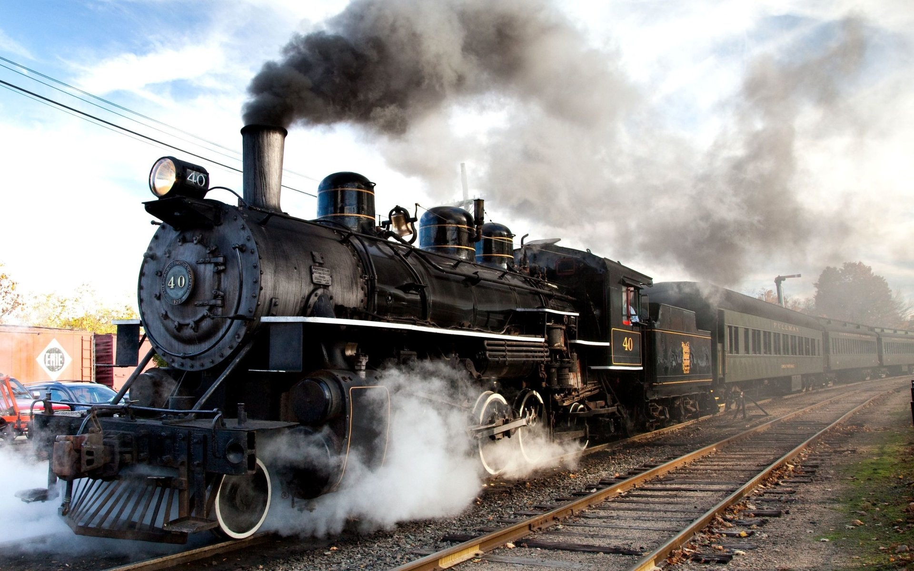

In rail transport, a train is a series of connected vehicles that run
along a railway track and transport people or freight. The word train
comes from the Old French trahiner, derived from the Latin trahere
meaning "to pull, to draw".[1] Trains are typically pulled or pushed
by locomotives (often known simply as "engines"), though some are
self-propelled, such as multiple units. Passengers and cargo are
carried in railroad cars, also known as wagons. Trains are designed to
a certain gauge, or distance between rails. Most trains operate on
steel tracks with steel wheels, the low friction of which makes them
more efficient than other forms of transport.
Trains have their roots in wagonways, which used railway tracks and
were powered by horses or pulled by cables. Following the invention of
the steam locomotive in the United Kingdom in 1804, trains rapidly
spread around the world, allowing freight and passengers to move over
land faster and cheaper than ever possible before. Rapid transit and
trams were first built in the late 1800s to transport large numbers of
people in and around cities. Beginning in the 1920s, and
accelerating following World War II, diesel and electric locomotives
replaced steam as the means of motive power. Following the development
of cars, trucks, and extensive networks of highways which offered
greater mobility, as well as faster airplanes, trains declined in
importance and market share, and many rail lines were abandoned. The
spread of buses led to the closure of many rapid transit and tram
systems during this time as well.
Since the 1970s, governments, environmentalists, and train advocates
have promoted increased use of trains due to their greater fuel
efficiency and lower greenhouse gas emissions compared to other modes
of land transport. High-speed rail, first built in the 1960s, has
proven competitive with cars and planes over short to medium
distances. Commuter rail has grown in importance since the 1970s as an
alternative to congested highways and a means to promote development,
as has light rail in the 21st century. Freight trains remain important
for the transport of bulk commodities such as coal and grain,
as well as being a means of reducing road traffic congestion by
freight trucks.
While conventional trains operate on relatively flat tracks with two
rails, a number of specialized trains exist which are significantly
different in their mode of operation. Monorails operate on a single
rail, while funiculars and rack railways are uniquely designed to
traverse steep slopes. Experimental trains such as high speed maglevs,
which use magnetic levitation to float above a guideway, are under
development in the 2020s and offer higher speeds than even the fastest
conventional trains. Development of trains which use alternative fuels
such as natural gas and hydrogen is another 21st century development.
News of the success of steam locomotives quickly reached the United
States, where the first steam railroad opened in 1829.[5] American
railroad pioneers soon started manufacturing their own locomotives,
designed to handle the sharper curves and rougher track typical of the
country's railroads.[6].
The other nations of Europe also took note of British railroad
developments, and most countries on the continent constructed and
opened their first railroads in the 1830s and 1840s, following the
first run of a steam train in France in late 1829.[7] In the 1850s,
trains continued to expand across Europe, with many influenced by or
purchases of American locomotive designs.[7] Other European countries
pursued their own distinct designs. Around the world, steam
locomotives grew larger and more powerful throughout the rest of the
century as technology advanced.[8]
Trains first entered service in South America, Africa, and Asia
through construction by imperial powers, which starting in the 1840s
built railroads to solidify control of their colonies and transport
cargo for export.[9] In Japan, which was never colonized, railroads
first arrived in the early 1870s. By 1900, railroads were operating on
every continent besides uninhabited Antarctica.[10]
Even as steam locomotive technology continued to improve, inventors in
Germany started work on alternative methods for powering trains.
Werner von Siemens built the first train powered by electricity in
1879, and went on to pioneer electric trams.[8] Another German
inventor, Rudolf Diesel, constructed the first diesel engine in the
1890s, though the potential of his invention to power trains was not
realized until decades later.[8] Between 1897 and 1903, tests of
experimental electric locomotives on the Royal Prussian Military
Railway in Germany demonstrated they were viable, setting speed
records in excess of 160 kilometers per hour (100 mph).[11]